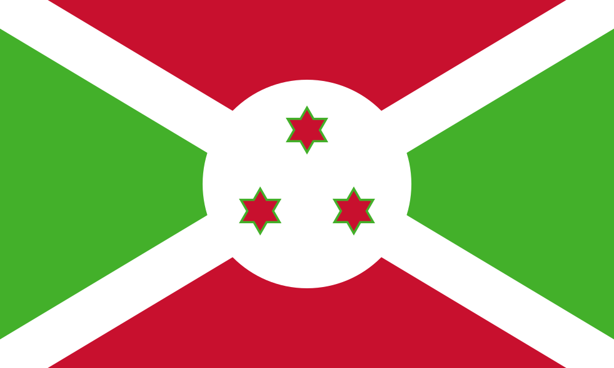

BIGIRIMANA Jolis
About Me
My name is Bigirimana Jolis and I am passionate about Agriculture. I was born in Burundi and live with my family in Bujumbura. I am currently working as an agribusiness coach and trainer at a local NGO. Rural farmers are my world and I love spending time with them. I love to travel and I love to learn new things.
Bujumbura, Burundi

Burundi is a small, landlocked country in East Africa that relies on agriculture as the main foundation of its economy and daily life.